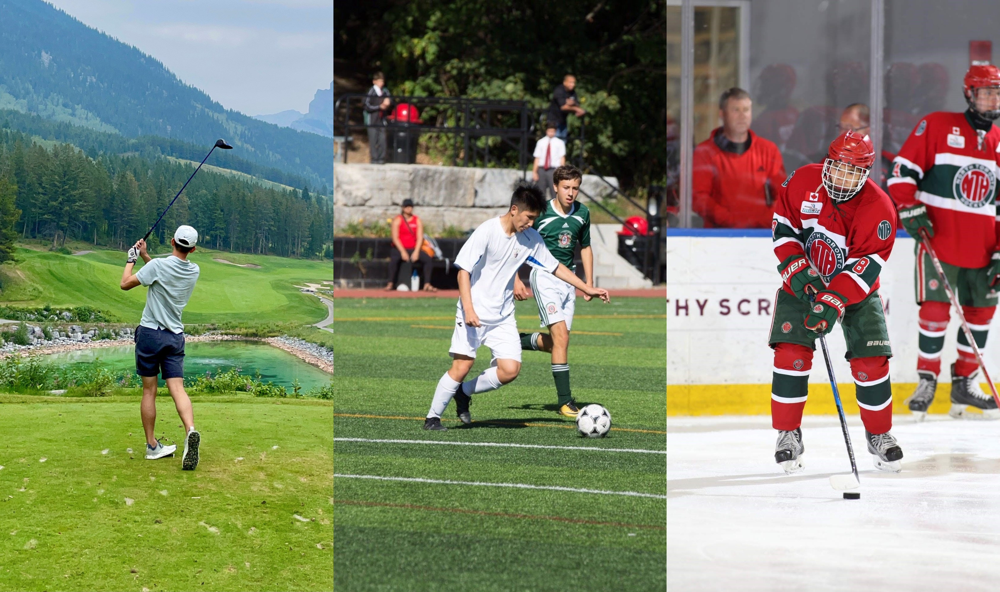

About

Currently I'm entering my final year of studying Integrated Engineering at UBC with a focus on computer engineering and engineering physics I hope to leverage these skills in the software engineering or data science fields in the future.
Some programming Languages and technologies I am most proficient with include:
Python, Jupyter, Katalon(end to end test automation), RESTful APIs, and Java
Beyond these tools I also have intermediate experience with backend development, JavaScript, NodeJS, MongoDB, Kubernetes, and Jenkins.
On a more personal level, I love sports. Particularly, hockey and soccer which I played competitively throughout my youth and high school. From this passion I also have a deep love hate relationship with fantasy sports. Two other activities which I picked up through the pandemic and are increasingly growing as favourite past times are golf and running. A 'fun' fact is I recently ran the Vancouver Marathon :). I also love music and spoiler alert, you can see more on how I used that passion to develop a music sharing application in my projects section.
Feel free to add me on Strava 🏃 or Spotify 🎵
"It takes a village to raise a child" is an African proverb and one of my favourite quotes. A big believer in the value of team and surrounding myself with outstanding people I strive to be that excellent team member or friend that everyone is grateful to have.

Work Experience

Currently, I'm continuing on at BC Children’s as a work-learn student in a data scientist role. My primary focus is on a project for pain risk prediction to assist in pain management throughout the surgical process at BC Children's Hospital. Here I will be identifying and developing appropriate prediction models and risk factors to explore pain trajectory patterns within the data. I also will support data cleaning, visualization, and feature engineering for further analysis and evaluate model success based on locally collected clinical data.
At BC Children’s I have worked under the supervision of Dr. Matthias Goerges in the digital health innovation lab. My role as Visual Analytics Tool Developer challenged me to focus on the details behind data visualization while introducing me to the world of digital health and its’ benefits for clinical support and improvement. Focussing in the Anaesthesia realm, I supported work on the Post Operative Follow-up (POFU), Paediatric Difficulty Intubation (PeDI) and Pain Risk Prediction (POQI) projects. In POFU I helped develop and refine existing dashboards which outline outcomes in both the post anesthetic care unit (PACU) and 24 hours post surgery. Notable incidences such as pain, nausea, and vomiting were highlighted for 24h outcomes, while number of opioids and antiemetics provided for PACU. For PeDI I, collaborated with the department to understand design and develop dashboards that highlight effective intubation techniques and allowed users to analyze causation/correlation between these techniques and different complications. Finally, in the POQI study I developed Jupyter notebooks (python) to automate data cleaning and analysis which was particularly cumbersome given the number of different data sources. To develop dashboards for these projects I learned and significantly improved my skills with PowerBI and MQuery.
I spent 8 (September 2021 to April 2022) months as a BSA (Business System Analyst) at CIBC where I continually improved my understanding of project portfolio management and managing process transformation and improvements. One of my key roles was managing an application migration process where I supported intake leads and solution designers to complete outstanding tasks reducing the risk and complications of the data migration for the application process. In this role I also collaborated with managers on designing more efficient methods for processing requests. Additionally, I developed a variety of Tableau dashboards to support directors manage their portfolios. Lastly, I designed new python scripts and new processes to expedite how the team handles new intake requests and project change requests; a daily task that previously took 1 hour was reduced to 15 minutes. Alongside these projects I exemplified initiative and team-player attitude supporting urgent requests and reports. I’m pleased to say my hard work was also recognized as I was nominated and received the CIBC Exceptional Co-op Student Award (~40 out of 500+ students).

Over the 2021 summer I interned at MDA (Macdonald Dettwiler and Associates) for the geointellgience division where I was a Software Test Engineer. At MDA I spent my time developing automated web applicaiton tests and API testing. Here I improved my abilities in end to end test automation using the cucumber framework through Katalon Studio.
Projects
In my third year capstone project myself and a five others created project overlap. Overlap is a Spotify integrated web application that collects the users listening data creating fun visualizations for the user to understand their own listening habits. The other key feature we built was the group sharing capabilities to compare your listening habits to your friends. At Overlap I lead the backend team designing and coding our middleware functions, database schemas, and algorithm development for calculating favourites and generating playlists.
You can view the project source code here and learn more about it in this video

For my second year capstone project I alongside my team designed a solar powered path/stret light. Unfortunately, we were interrupted by the COVID-19 pandemic and shifted towards developing a full scale CAD model. As team lead for Solit I was responible for CAD reviews and lead the system simulation. The other notable contribution I made was programming components such as our data logger and battery and solar management system.
Resume

Contact